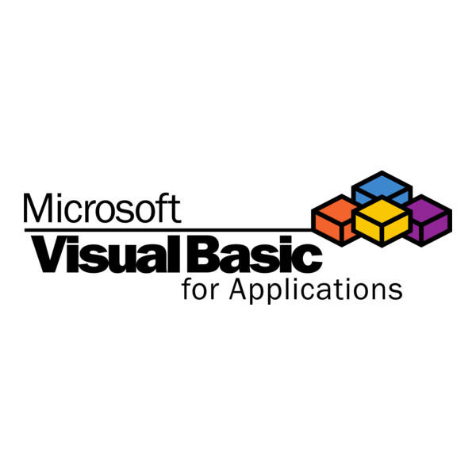

Data Analysis & Business Intelligence
Explore, clean, and interpret raw datasets to identify trends, define KPIs, and turn business questions into clear, data-driven recommendations.

Data Analyst
Turning data into something useful.
Power BI | SQL | Excel | Python
Explore my workI like making sense of things. Data just happens to be one of the best ways to do it.
My journey into data analytics started from the business side, working with insurance processes, policies, reports, and the day-to-day problems that come with managing real operational data.
Over time, I became increasingly interested in what sits behind those numbers. What drives performance? Where are processes falling short? Which patterns are easy to miss? And most importantly, how can data help someone make a better decision?
That curiosity led me into learning advanced Excel, Power BI, SQL, and Python, where I now build dashboards, analyze datasets, automate reporting, and turn complex information into something people can actually use.
I believe the best analytical work isn't the most complicated - it's the work that makes a hard question easier to answer. I'm building my career around one idea: turning data into something useful.
Let's work togetherExplore, clean, and interpret raw datasets to identify trends, define KPIs, and turn business questions into clear, data-driven recommendations.
Build interactive, visually intuitive dashboards in Power BI and Excel that let users monitor KPIs, explore trends, and make informed decisions at a glance.
Structure and prepare inconsistent or raw data using Power Query, SQL, and Python - turning messy datasets into a reliable foundation for analysis and reporting.
Develop advanced Excel solutions and scripted workflows using formulas, Power Query, VBA, SQL, and Python that cut repetitive work and streamline reporting.
Resume
Download my latest resume for a summary of my experience and technical background.
View resumeA growing collection of dashboards, analyses, and reporting systems built to make complex information easier to use.

A comprehensive analysis of Philippine Consumer Price Index data from 2018-2026, using official PSA data to examine inflation trends, regional and commodity-level price movements, contribution drivers, and the relationship between global Brent crude oil prices and Philippine inflation.
View project
A recreation of the Excel dashboard I originally built, using the same underlying dataset. This full-year 2025 performance analysis, with 2024 comparison, covers a Moving & Storage MGA's commercial book across Package and Workers' Compensation lines, roughly 1,000 renewal accounts, 154 brokers, and 48 states.
View project
An Excel-based analysis of 2025 commercial insurance performance for a Moving & Storage MGA, with 2024 comparisons where relevant, across Package and Workers' Compensation lines of business.
View project
An executive-level Power BI dashboard tracking 320+ simulated DPWH flood control projects, integrating project progress, budget utilization, flood risk, timelines, and contractor performance into an interactive portfolio view.
View project
• Data Analytics Level 1 | ExcelHelpline PH
The toolkit

VBA Power Query
Power Query Power BI
Power BI Python
Python MySQL
MySQL SQLite
SQLiteHave a dataset, dashboard, or business question that needs a clearer answer?